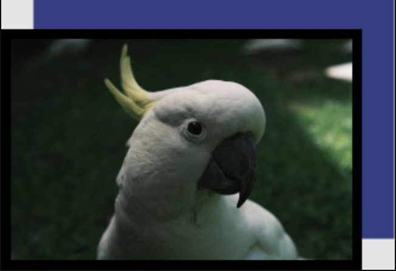
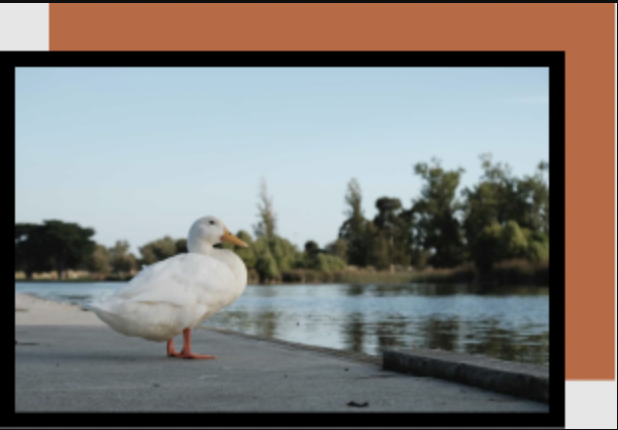
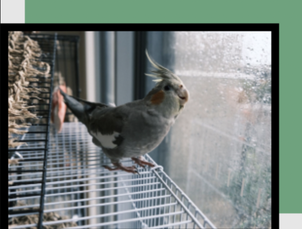
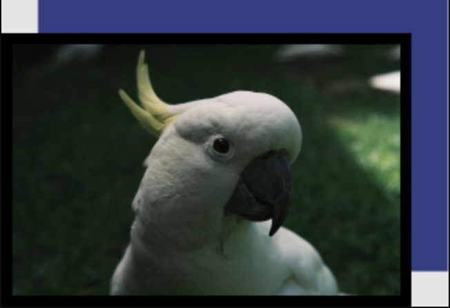
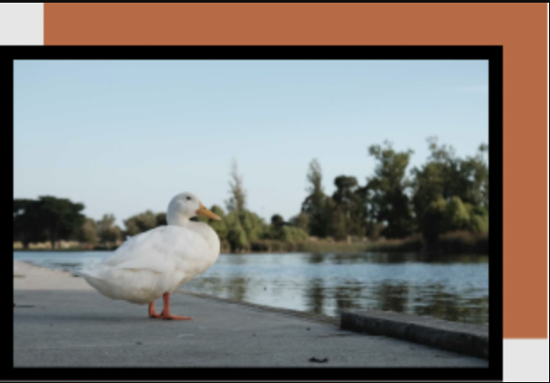
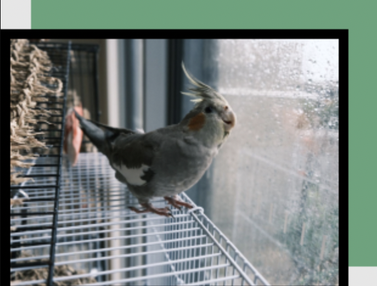

Hello , I'm Zixin!
--------------------About me--------------------
HI THERE!
My name is Zixin Wen. Prior to UX Design, I‚Äôve worked in sales & marketing, early childhood education and art education. ‍ Everything I‚Äôve done has been in pursuit of understanding people more deeply and fostering moments of empathy. ‍ As a human, I‚Äôm frequently spotted playing with my cat and dog, talking about movies and talking about skewered bbq. üç° ‍

Currently, I'm pondering:
How can we encourage people to slow down a bit, to listen to their inner voice? ‍ How can we contribute to a world that is with more warmth and more meaningful connections? ‍ How can we help people who struggle to discover their true passions? ‍ How can we lift up the unheard stories of struggle, of shame, of triumph, of process?
If you want to know more...
I have always been inspired by people. ‍ Throughout my work and my interests outside of work, I saw a recurring pattern in myself of wanting to solve problems, to understand, and to create and share experiences of delight. I’m in love with UX, because I’ve been in a variety of spaces that thrive off of telling people what they should want or need... and it can work, but it can also be better. ‍It’s with real human interactions, narratives, and perspectives that really everything can improve. Design asks how to solve a problem. UX asks how people are affected by the problem. UX Design is when solutions reflect the context— the problem, the users, the product. People refine design, designs refine people. It’s a symbiotic relationship.
My UX Skills
Strategy:
Identity, strategy, voice, content, marketing, social, branding, communication Design: ux research, user interviews, user observations, user scenarios, empathy map, user flow, ux writing; product analysis & critiques, card sorting, information architecture, user flows, idea sketches, wireframing, prototyping, usability testing, product design, interface and interaction design Organizational: Project management, feedback, design critique, positive reinforcement, relationship building and maintainance, speech and presentation & demonstration Marketing/Creative: Campaign development and execution, partnerships, fostering key relationships, cross-functional collaborations
Tech:
Design: Figma, Zeplin, Miro, Webflow, Invision, Photoshop, Wix, Squarespace. Code: Github, CodePen, Visual Studio, HTML, CSS. ‍ ‍Project Management: ‍Trello, Google drive. Photography: Editorial, nature, food, portrait.
Some delightful moments I’d like to share with you...

 




